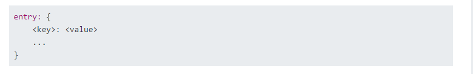
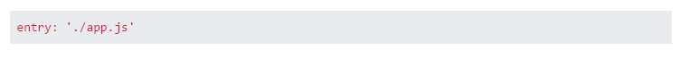
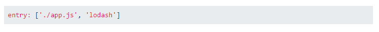
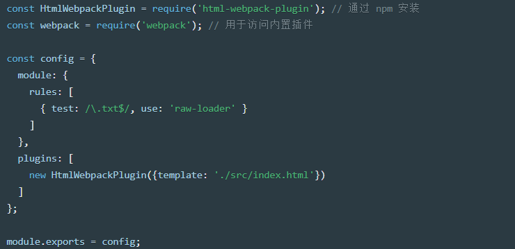
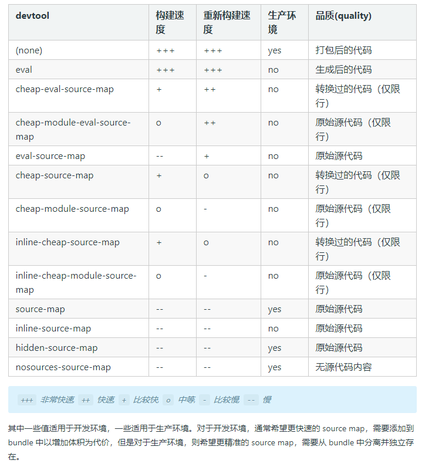

Webpack
开始
npm init –y //初始化npm
npm install –-save-dev webpack webpack-cli //安装webpack，webpack-cli是命令行运行//webpack
npm install –-save-dev lodashWebpack打包资源的管理：
（1）：打包入口，对不同资源的打包
（2）：打包输出，bundle、chunk的概念
（3）：开发
（3.1）：使用服务器
（3.2）：模块热替换
（3.3）：构建不同的环境
（3.4）：tree shaking
（3.5）：代码分离
（3.6）：懒加载
（3.7）：缓存
四个核心概念：
入口（entry）：
指示 webpack 应该使用哪个模块，来作为构建其内部依赖图的开始。进入入口起点后，webpack 会找出有哪些模块和库是入口起点（直接和间接）依赖的
Entry接受三种形式的值：字符串、数组和对象
对象entry：

对象中的每一对属性，都代表一个入口文件。
Key可以是字符串，对应output.filename配置中的[name],也可以是路径字符串，webpack会自动生成路径目录，并将路径的最后一个作为[name]。
value如果是字符串，而且必须是合理的noderequire函数参数字符串。比如文件路径：’./app.js’(require(‘./app.js’))；比如安装的npm模块：’lodash’(require(‘lodash’))。
value如果是数组，则数组中元素需要是上面描述的合理字符串值。数组中的文件一般是没有相互依赖关系的，但是又处于某些原因需要将它们打包在一起。
对于多入口，会建立彼此完全分离、互相独立的依赖图。
字符串entry：

数组entry：

字符串/字符串数组：
如果传入一个字符串或字符串数组，chunk 会被命名为 main
出口（output）：
Output属性告诉webpack在哪里输出它所创建的bundles，以及如何命名这些文件，默认值为./dist。
可以存在多个入口，但只指定一个输出配置。
output.path只是指示输出的目录，对应一个绝对路径
明确chunk、bundle和module的概念
Webpack把每一个文件看成一个module，对入口module进行递归式打包，chunk是webpack的打包过程，是一堆module的集合，bundle是最终输出的打包文件。Chunk是过程量，bundle是结果量。
设定 HtmlWebpackPlugin
npm install --save-dev html-webpack-plugin清理 /dist 文件夹
npm install clean-webpack-plugin –save-dev
注：在webpack-dev-server上运行，clean-webpack-plugin会把dist文件夹里面的内容全部清除，但webpack（build）的时候只会删除为使用的。
尝试补坑：https://blog.csdn.net/qq_44698161/article/details/102903521（注意clean 和 copy plugins使用的顺序）webpack打包顺序？
或者根据不同的环境配置使用clean-webpack-plugin
Loader：
Loader让webpack能够去处理那些非javascript文件（webpack自生只能理解javascript）。Loader可以将所有类型的文件转换成webpack能够处理的有效模块，再利用webpack进行打包。
在 webpack 的配置中 loader 有两个目标：
- test 属性，用于标识出应该被对应的 loader 进行转换的某个或某些文件。
- use 属性，表示进行转换时，应该使用哪个 loader。
每个规则可以分为三部分 - 条件(condition)，结果(result)和嵌套规则(nested rule)
Rule 条件
条件有两种输入值：
- resource：请求文件的绝对路径。它已经根据 resolve 规则解析。
- issuer: 被请求资源(requested the resource)的模块文件的绝对路径。是导入时的位置。
例如: 从 app.js 导入 ‘./style.css’，resource 是 /path/to/style.css. issuer 是 /path/to/app.js。
在规则中，属性 test, include, exclude 和 resource 对 resource 匹配，并且属性 issuer(这个选项可以用来将 loader 应用到一个特定模块或一组模块的依赖中) 对 issuer 匹配。
当使用多个条件时，所有条件都匹配
Rule 结果
规则结果只在规则条件匹配时使用。
规则有两种输入值：
1． 应用的 loader：应用在 resource 上的 loader 数组。
- Parser 选项：用于为模块创建解析器的选项对象。
这些属性会影响 loader：loader, options, use。
嵌套的 Rule
可以使用属性 rules 和 oneOf 指定嵌套规则。
这些规则用于在规则条件(rule condition)匹配时进行取值。
压缩和优化你的图像。查看 image-webpack-loader 和 url-loader**，以了解更多关于如果增强加载处理图片功能。
插件（plugins）
插件的范围包括，从打包优化和压缩，一直到重新定义环境中的变量。
想要使用一个插件，你只需要 require() 它，然后把它添加到 plugins 数组中。多数插件可以通过选项(option)自定义。你也可以在一个配置文件中因为不同目的而多次使用同一个插件，这时需要通过使用 new 操作符来创建它的一个实例。

模式：
通过选择 development 或 production 之中的一个，来设置 mode 参数，你可以启用相应模式下的 webpack 内置的优化
Devtool
此选项控制是否生成，以及如何生成 source map。

解析（resolve）
resolver 是一个库(library)，用于帮助找到模块的绝对路径。一个模块可以作为另一个模块的依赖模块，然后被后者引用，如下：
import foo from 'path/to/module'
// 或者
require('path/to/module')
resolve.alias 创建 import 或 require 的别名，来确保模块引入变得更简单，也可以在给定对象的键后的末尾添加 $，以表示精准匹配：
alias: {
xyz$: path.resolve(__dirname, 'path/to/file.js')
}这将产生以下结果：
import Test1 from 'xyz'; // 精确匹配，所以 path/to/file.js 被解析和导入
import Test2 from 'xyz/file.js'; // 非精确匹配，触发普通解析resolve.extensions：
自动解析确定的扩展。默认值为：
extensions: [".js", ".json"]能够使用户在引入模块时不带扩展：
import File from '../path/to/file'resolve.modules
告诉 webpack 解析模块时应该搜索的目录。
开发中 Server(devServer)
npm install --save-dev webpack-dev-server每次要编译代码时，手动运行 npm run build 就会变得很麻烦。webpack 中有几个不同的选项，可以帮助你在代码发生变化后自动编译代码。webpack-dev-server 为你提供了一个简单的 web 服务器，并且能够实时重新加载(live reloading)。
webpack-dev-server主要是启动了一个使用express的Http服务器。它的作用主要是用来伺服资源文件。此外这个Http服务器和client使用了websocket通讯协议，原始文件作出改动后，webpack-dev-server会实时的编译，但是最后的编译的文件并没有输出到目标文件夹。
你启动**webpack-dev-server\后，你在目标文件夹中是看不到编译后的文件的**,\实时编译后的文件都保存到了内存当中。
webpack-dev-server支持2种自动刷新的方式：
1.Iframe mode
2.inline mode
compress: true//启用gzip压缩
contentBase: path.join(__dirname, "public")//告诉服务器从哪里提供内容
hot: true//启用热替换
lazy: true//dev-server只有在请求的时候才编译包
publicPath: "/assets/" HTML不会热更新。只有js，css这些被webpack管理的模块化东西才会热更新。
React Hot Loader：实时调整 react 组件
tree shaking
tree shaking 是一个术语，通常用于描述移除 JavaScript 上下文中的未引用代码(dead-code)。它依赖于 ES2015 模块系统中的静态结构特性，例如 import 和 export。
在一个纯粹的 ESM 模块世界中，识别出哪些文件有副作用很简单。然而，我们的项目无法达到这种纯度，所以，此时有必要向 webpack 的 compiler 提供提示哪些代码是“纯粹部分”。
这种方式是通过 package.json 的 “sideEffects” 属性来实现的。
{
"name": "your-project",
"sideEffects": false
}（实验失败，了解）
生产环境配置
配置不同环境的webpack
npm install --save-dev webpack-merge使用 merge，修改npm scripts
代码分离
代码分离是 webpack 中最引人注目的特性之一。此特性能够把代码分离到不同的 bundle 中，然后可以按需加载或并行加载这些文件。代码分离可以用于获取更小的 bundle，以及控制资源加载优先级，如果使用合理，会极大影响加载时间。
有三种常用的代码分离方法：
· 入口起点：使用 entry 配置手动地分离代码。
如果入口 chunks 之间包含重复的模块，那些重复模块都会被引入到各个 bundle 中。
这种方法不够灵活，并且不能将核心应用程序逻辑进行动态拆分代码。
· 防止重复：
SplitChunks插件(webpack 4.x以前使用CommonsChunkPlugin)允许我们将公共依赖项提取到现有的entry chunk或全新的代码块中。
· 动态导入(懒加载)：通过模块的内联函数调用来分离代码。
import()
import() 不同于 import，该方法为了动态加载模块而引入的新语法
import() 返回结果是 Promise
缓存
webpack 会生成一个可部署的 /dist 目录，然后把打包后的内容放置在此目录中。只要 /dist 目录中的内容部署到服务器上，客户端（通常是浏览器）就能够访问网站此服务器的网站及其资源。而最后一步获取资源是比较耗费时间的，这就是为什么浏览器使用一种名为 缓存 的技术。可以通过命中缓存，以降低网络流量，使网站加载速度更快，然而，如果我们在部署新版本时不更改资源的文件名，浏览器可能会认为它没有被更新，就会使用它的缓存版本。由于缓存的存在，当你需要获取新的代码时，就会显得很棘手。
输出文件的文件名(Output Filenames)
通过使用 output.filename 进行文件名替换，可以确保浏览器获取到修改后的文件。[hash] 替换可以用于在文件名中包含一个构建相关(build-specific)的 hash，但是更好的方式是使用 [chunkhash] 替换。
以上内容是以前练习使用webpack总结的，以后还会更新。